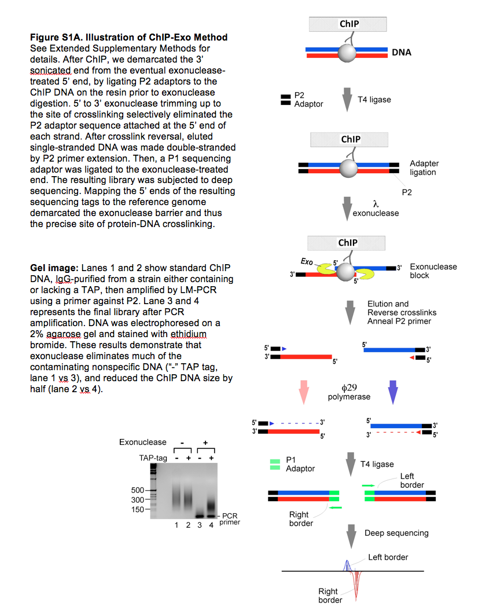
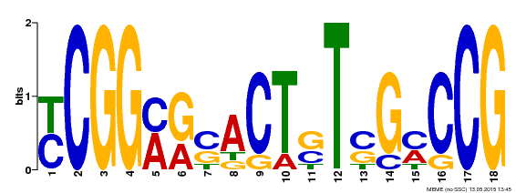
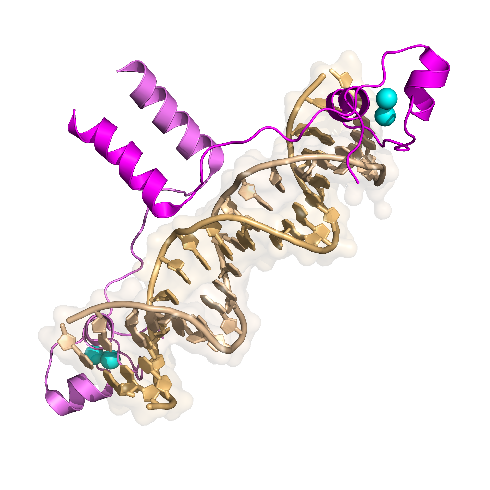

ChIP-Seq Hands-on Workshop
March 14th, 2015
Created by Wayne Decatur for Feng Lab Group meeting

from Rhee HS and Pugh BF (2011) Comprehensive Genome-wide Protein-DNA Interactions Detected at Single-Nucleotide Resolution. Cell 147(6):1408-19. PMID: 22153082. Right click on image and open in new tab to see nicely.


from DNA sequence preferences of GAL4 and PPR1: how a subset of Zn2 Cys6 binuclear cluster proteins recognizes DNA. Liang SD, Marmorstein R, Harrison SC, Ptashne M. Mol Cell Biol. 1996 Jul;16(7):3773-80. PMID: 8668194. Right click on image and open in new tab to see nicely.
 Right click on image and open in new tab to see nicely.
Right click on image and open in new tab to see nicely.

THE END